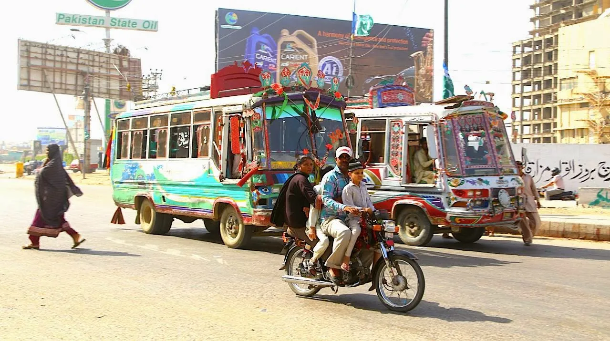
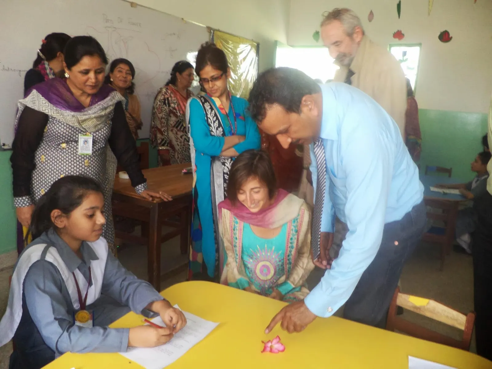
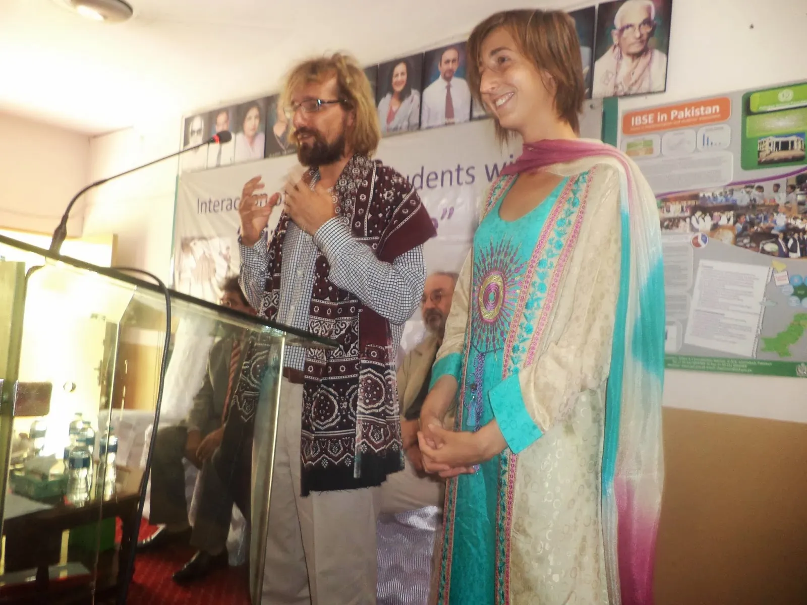

Après l'Inde, bienvenu au Pakistan ! Nous sommes merveilleusement accueillis à Karachi pas la Pakistan Science Foundation, le grand centre scientifique du pays. Malgré nos heures de retard pour cause de problèmes avec les services d'immigration (de nouveau), tout est organisé à la perfection !
Un diner de réception, des rencontres avec d'éminents scientifiques, des visites dans des écoles (et accueil par des lancers de pétales de rose !) et dans la ville, et même une robe pakistanaise pour Clem (qui l'adore)

La première chose que nous avons apprécié dans la ville à la sortie de l'aéroport : la créativité et le sens artistique des habitants. Regardez dans la rue ! Le moindre bus, le moindre tuk-tuk est richement décoré avec pleins de couleurs et d'ajouts, chacun est unique !

